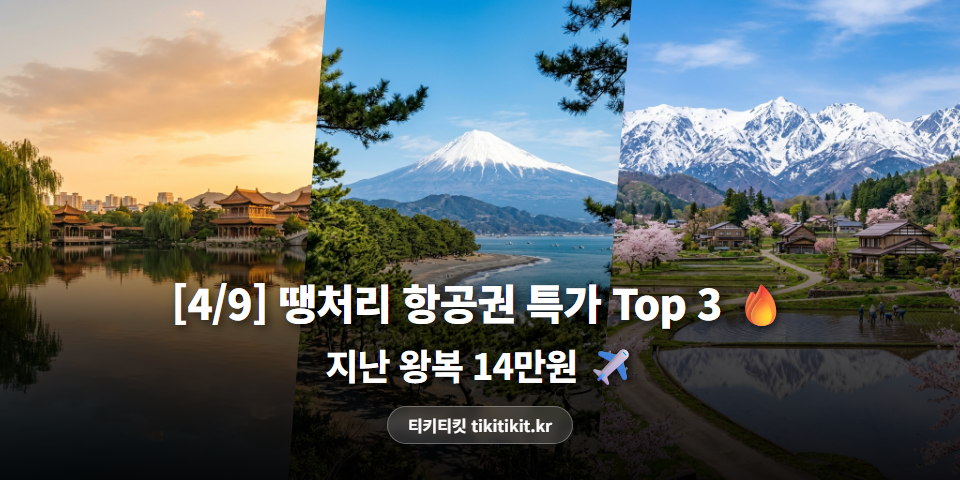
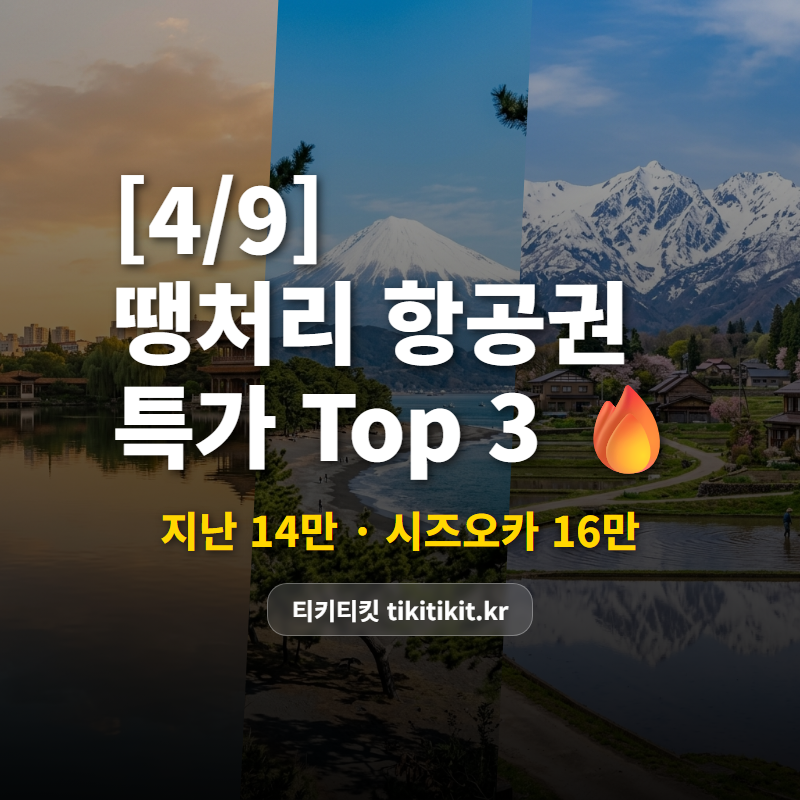

[4/9] 땡처리 항공권 특가 TOP 3 | 지난 14만원, 시즈오카 16만원 ✈️

4월 중순, 슬슬 여행 계획 세울 때 ✈️
오늘도 여행사 6곳을 뒤져서
쓸만한 특가만 골라왔습니다.
🏆 4/9 추천 특가 TOP3
🥇 1위
인천 ↔ 지난
에어로케이 · 4/14(화)~4/18(토) · 4박 5일
149,000원

제남 구시가지에서 거리 음식 탐방 🍜
🥈 2위
부산 ↔ 시즈오카
에어부산 · 5/4(월)~5/6(수) · 2박 3일
160,000원

후지산이 보이는 온천의 도시 ♨️
🥉 3위
인천 ↔ 도야마
티웨이항공 · 4/19(일)~4/22(수) · 3박 4일
199,000원

다테야마 알펜루트 + 구로베 협곡 🏔️
※ 유류할증료/텍스 포함 왕복 총액 기준
※ 좌석이 빠지면 가격이 바뀌거나 사라질 수 있어요.
💡 에디터 픽 : 1위 인천-지난
인천-지난 왕복 149,000원!
에어로케이 직항으로
4박 5일 알찬 일정입니다.
대명호 야경 산책에 산동 만두까지 🥟
여유롭게 즐기는 소도시 감성!
왕복 14만9,000원이면
비행 짧고 물가 착한 최적의 여행지.
📌 인천 출발은 뭐가 있을까?
이번 인천 출발 추천 라인업!

✈️ 오키나와 249,000원 (이스타항공)
4/22~4/24 · 2박 3일 투명 바다 힐링 여행!

✈️ 칭다오 219,300원 (산동항공)
4/27~4/30 · 3박 4일 맥주거리 + 해산물 클라쓰!

✈️ 타이베이 239,000원 (스쿠트항공)
4/22~4/25 · 3박 4일 스린야시장 + 지우펀 코스!
✨ 이번 주 항공권 꿀팁
✈️ 지방 출발은 공항 인파도 적어서 체크인·보안검색이 훨씬 빠릅니다.
💰 땡처리 항공권은 좌석이 한정적이라, 보이면 바로 잡는 게 핵심이에요!
💡 출입국 TIP: 자동출입국 등록하면 공항에서 줄 안 서고 바로 통과!
매일 새로운 특가가 올라오고 있어요.
다음 여행지를 고민 중이라면
한번 구경해보세요 ✈️
#땡처리항공권 #특가항공권 #항공권싸게사는법 #항공권최저가 #해외여행꿀팁 #티키티킷 #4월항공권 #4월해외여행 #지난여행 #시즈오카여행 #도야마여행 #오키나와여행 #칭다오여행 #타이베이여행